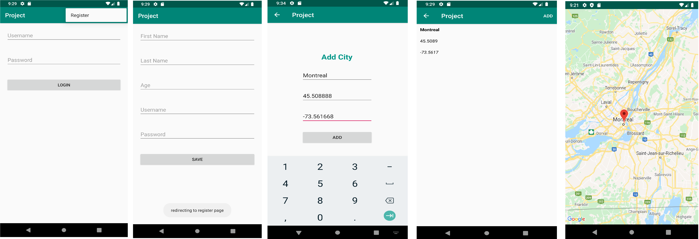

Android application

• It's an application to drop a marker on google maps utilizing longitude and latitude as
parameters.
• At the point when the application begins the primary screen is a login activity.
• In the event that the user isn't registered, the user is diverted to enlist page when
• tapped on register.
• After the user is effectively enlisted, user is diverted to the login.
• When login is fruitful, the application will show a rundown of city names which are
• included before hand and shown utilizing list view.
• In the menu area the user has a choice to add a city to the rundown.
• To include a city the user must enter a city name, latitude and longitude esteems. when you click
on
• add the city is added to the rundown.